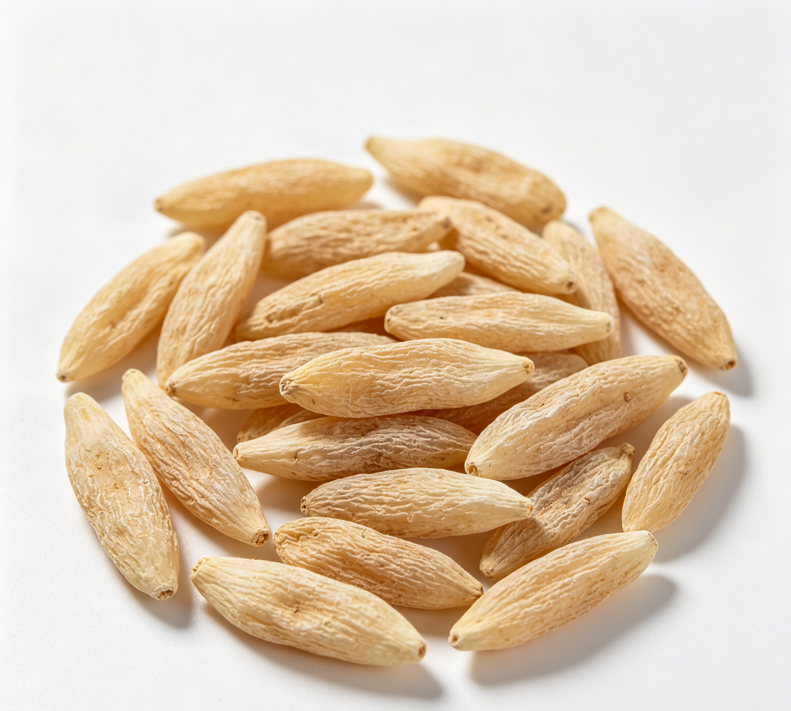

📋 基本信息
中文名麦冬
拉丁名Ophiopogon japonicus (L.
英文名Ophiopogonis Radix
产地科：百合科（Liliaceae）；属：沿阶草属（Ophiopogon）。主产于浙江（杭州笕桥、慈溪，习称'杭麦冬'或'浙麦冬'，道地药材）、四川（绵阳三台，习称'川麦冬'，产量最大）；湖北、江苏、山东、贵州等地亦产。
性状本品呈纺锤形，两端略尖，长1.5～3cm，直径0.3～0.6cm。表面淡黄色或灰黄色，有细纵纹。质柔韧，断面黄白色，半透明，中柱细小。气微香，味甘、微苦。（《中国药典》2020年版一部）
用法用量6～12g。（《中国药典》2020年版一部）
贮藏置阴凉干燥处，防潮。（《中国药典》2020年版一部）
☯ 传统属性
四气寒
五味甘、苦
归经心、肺、胃经
功能主治养阴生津，润肺清心。用于肺燥干咳，阴虚劳嗽，喉痹咽痛，津伤口渴，内热消渴，心烦失眠，肠燥便秘。（《中国药典》2020年版一部）
禁忌症脾胃虚寒泄泻、胃有痰饮湿浊及暴感风寒咳嗽者忌服。【来源：《中华本草》】
毒性常规用量安全性好；过量服用可致胃脘不适、腹胀、便溏；性微寒，虚寒体质者久服可加重腹泻、食欲减退；偶见过敏反应（皮疹、瘙痒）；与苦寒伤胃药长期同用应注意护胃。
适宜体质气虚质、平和质、阴虚质、痰湿质
适宜证型气虚证、脾胃气虚证、阴虚证、肺阴虚证
🔬 现代研究
主要成分主要含甾体皂苷类：麦冬皂苷（ophiopogonin）A、B、B′、C、C′、D、D′等，其中皂苷A、B、C、D的苷元为鲁斯可皂苷元（ruscogenin），B′、C′、D′的苷元为薯蓣皂苷元（diosgenin）；高异黄酮类：麦冬黄烷酮（ophiopogonone）A、B，甲基麦冬黄烷酮（methylophiopogonone）A、B等；另含麦冬多糖、挥发油、β-谷甾醇、多种氨基酸及钾、钠、钙、镁、铁、锌等无机元素。
药理作用已报道的药理活性包括：保护心肌、抗心肌缺血、抗心律失常（麦冬总皂苷）；增强免疫功能、耐缺氧、抗疲劳（麦冬多糖）；降血糖、改善胰岛素抵抗；抗炎、镇咳祛痰；促进唾液分泌、改善口干；镇静、改善睡眠；抗氧化、清除自由基；对血管内皮有保护作用。其养阴生津功效与促进腺体分泌、调节水液代谢相关。
食疗功效食疗上取其养阴生津、润肺清心之功，常用于秋燥咽干、干咳少痰、心烦失眠、口渴便秘的调理；与雪梨、川贝炖服润肺止咳，与西洋参、五味子泡饮（生脉饮意）益气养阴生津，为粤港及江浙家庭四季常用汤料。
食养禁忌
🏭 产品形态与潜在功能
推荐形态
饮片粉末胶囊
潜在功能